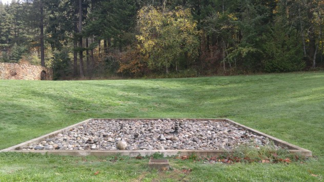
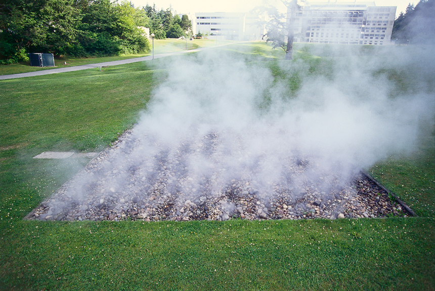
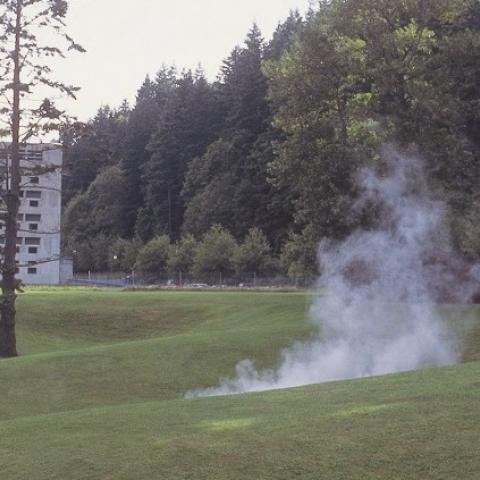

Experience the artwork of
Robert Morris
The Untitled Steamworks at Western Washington can be seen in different phases and is never quite the same as you left it.

This is a view of the art peice with no steam erupting from the rocks. The square is 20' x 20' filled with mostly smooth round stones.
exhibit with no steam

Here we can see an upclose view of the steam passing through the rocks.
exhibit steaming from rocks

From different distances the art peice can take on many different appearances, here from afar, the steam billows out of the small hillside.
view of the steam from a distance

Interaction with the art is a cornerstone of Robert Morris's work. Students and people visiting campus will often move the stones around and make stacks of rocks resembling cairns.
examples of cairn stacking
Audio of geyser sounds to help your imaginative thoughts.